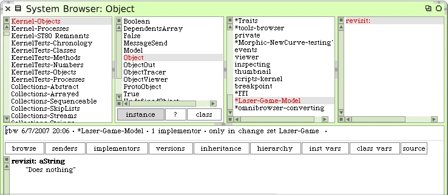
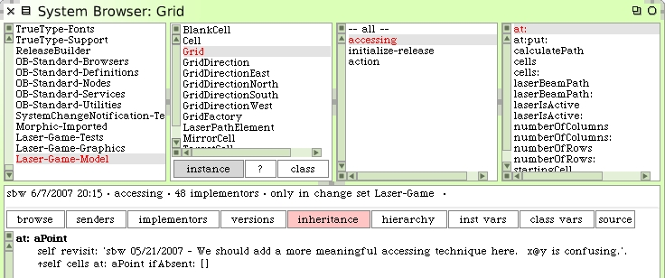
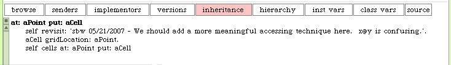
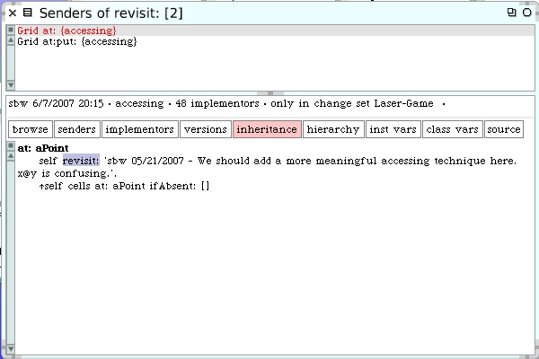

Leaving Notes In Your Code
You will probably run into the need to remember important issues to go back and revisit later. What's a good way to make it easy to leave little notes to yourself in the code?
If we implement an instance method #revisit: on Object a handy technique is revealed for collecting all your notes.
There is an important detail here I need to discuss. The #revisit: method was added to the Object class using a new protocol called "*Laser-Game-Model". Why did we do that? This new #revisit: method is an "extension" to a base class in Squeak. It's part of our new project but we need to be able to find it when we search for code belonging to our project. Obviously, the class Object already exists in Squeak so we cannot add Object to our Laser-Game-Model system category. And we wouldn't want to do that anyway since only this one method is of interest to us, as far as enhancing the base code is concerned.
To be completely clear here, find the class Object and on the instance side add a new method protocol named "*Laser-Game-Model". Then add the #revisit: method as shown on that protocol.
So we created a unique protocol and then added the #revisit: method on that protocol. Later, when we learn about our source control tool, Monticello, you will see the real reason we chose this unusual name for a protocol.
So how do we use this? Go back to the Grid class.
The #revisit: method doesn't do anything. But we can pass a String argument and so we leave ourselves a little note. As a convention I usually put my initials and the date when I created the note in my text.
Adding the same revisit to the #at:put: method makes sense too.
Later in our development we can perform a simple search for all senders of #revisit: to see the places where we left "notes" to ourselves.
